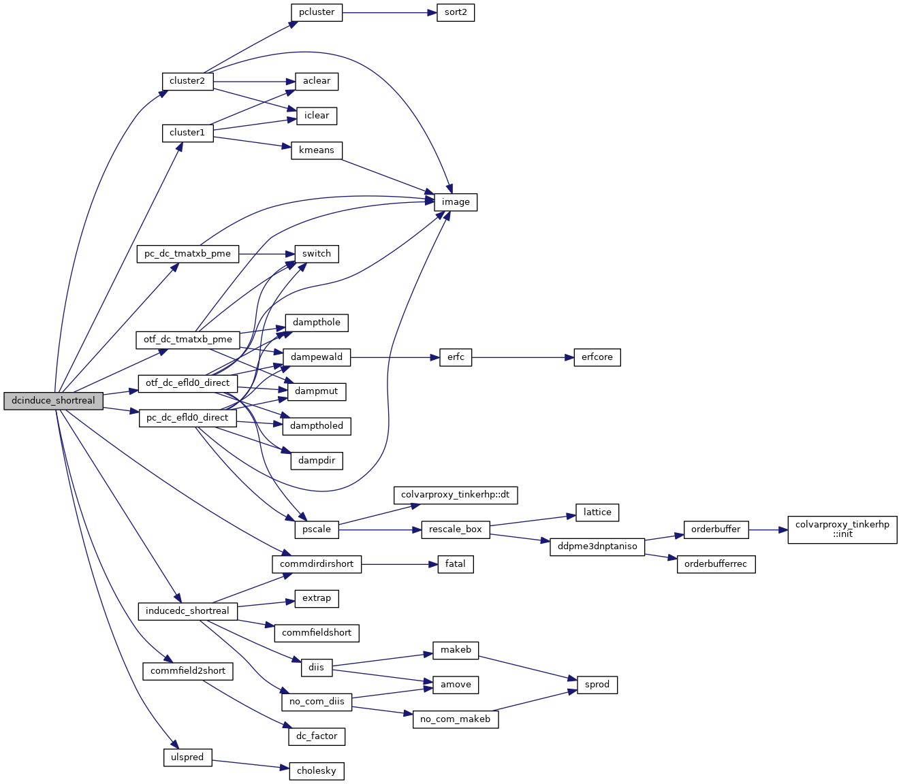
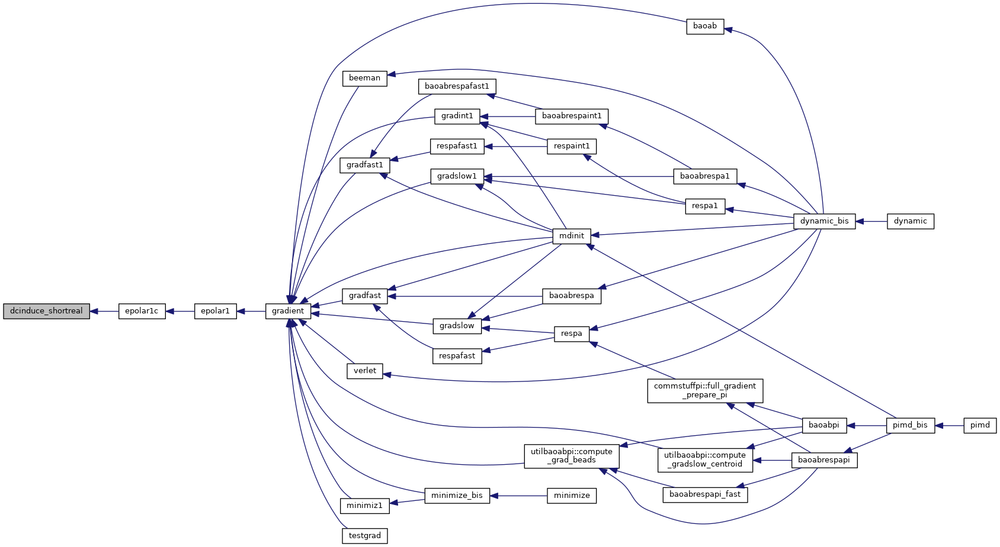
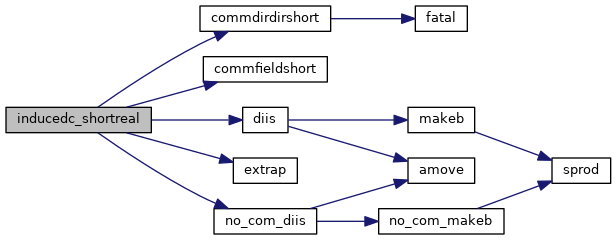
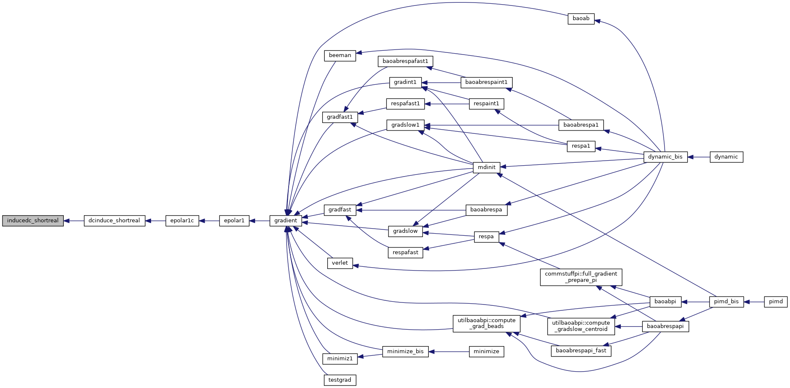

|
Tinker-HP v1.3
|
|
Tinker-HP v1.3
|
Go to the source code of this file.
Functions/Subroutines | |
| subroutine | dcinduce_shortreal |
| solve the polarization equations with a DC/JI-DIIS algorithm, driver More... | |
| subroutine | inducedc_shortreal (matvec, nrhs, dodiis, ef, mu) |
| solve the polarization equations with a DC/JI-DIIS algorithm, solver itself More... | |
| subroutine dcinduce_shortreal | ( | ) |
solve the polarization equations with a DC/JI-DIIS algorithm, driver
| no | params |
Definition at line 17 of file dcinduce_shortreal.f90.
References cluster1(), cluster2(), commdirdirshort(), commfield2short(), inducedc_shortreal(), otf_dc_efld0_direct(), otf_dc_tmatxb_pme(), pc_dc_efld0_direct(), pc_dc_tmatxb_pme(), and ulspred().
Referenced by epolar1c().


| subroutine inducedc_shortreal | ( | external | matvec, |
| integer | nrhs, | ||
| logical | dodiis, | ||
| real*8, dimension(3,nrhs,*) | ef, | ||
| real*8, dimension(3,nrhs,*) | mu | ||
| ) |
solve the polarization equations with a DC/JI-DIIS algorithm, solver itself
| [in] | matvec,: | matrix-vector product routine |
| [in] | nrhs,: | number of right hand side vectors |
| [in] | dodiis,: | use DIIS extrapolation or not |
| [in] | ef,: | right hand side (permanent electric field) |
| [in] | mu,: | solution vector (part corresponding to local domain in direct space) |
| [in] | murec,: | solution vector (part corresponding to local domain in recip space) |
Definition at line 210 of file dcinduce_shortreal.f90.
References commdirdirshort(), commfieldshort(), diis(), extrap(), and no_com_diis().
Referenced by dcinduce_shortreal().


 1.8.5
1.8.5